01scv
ON FILM
perception at an arm's length
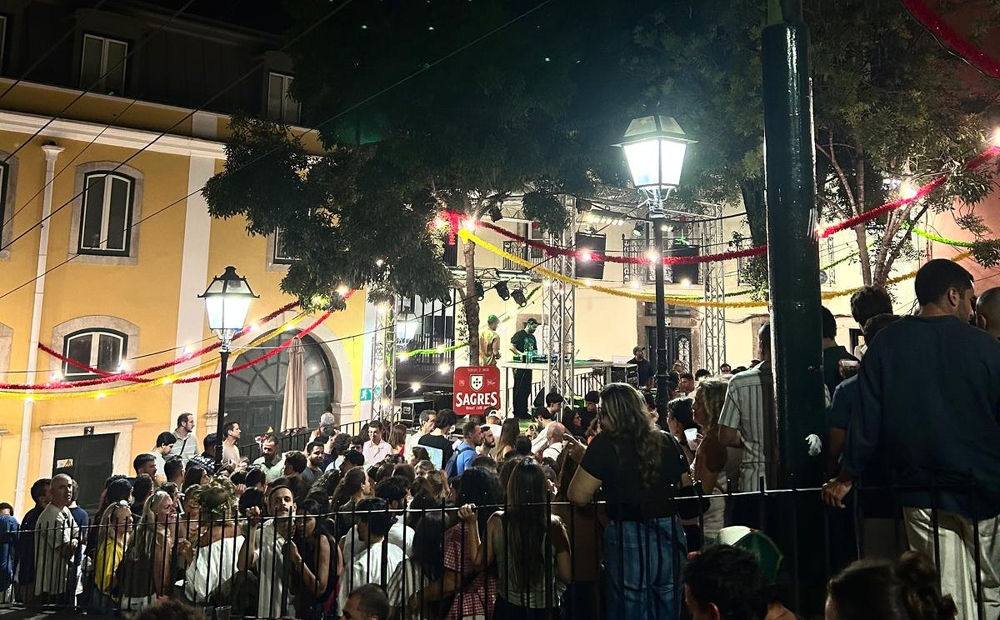
02
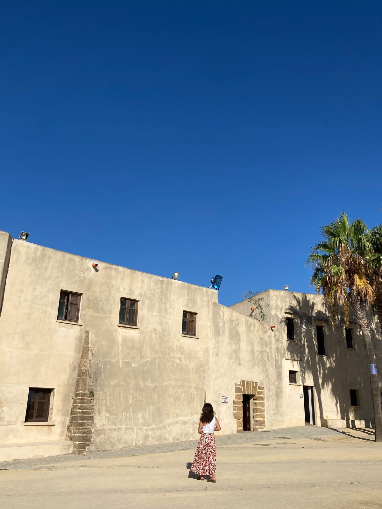
03
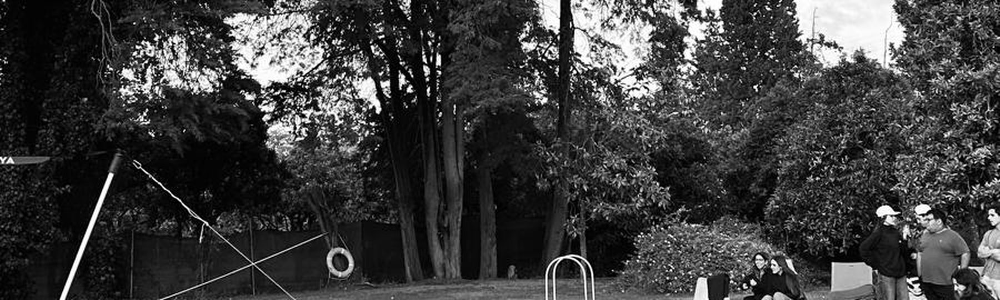
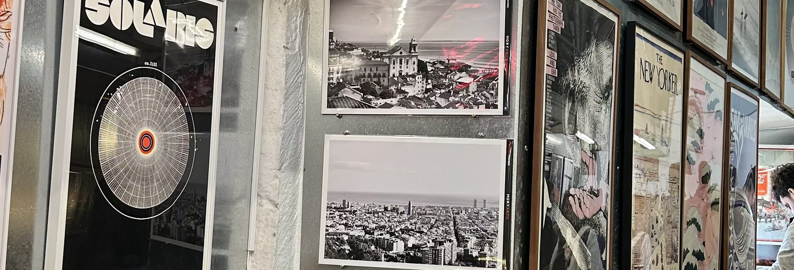
04
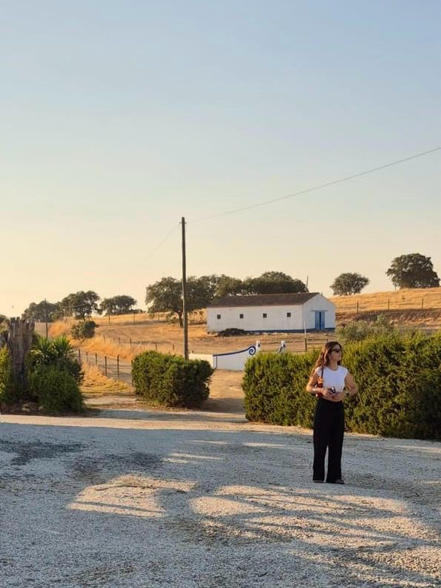
05
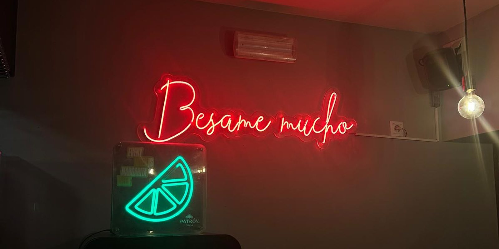
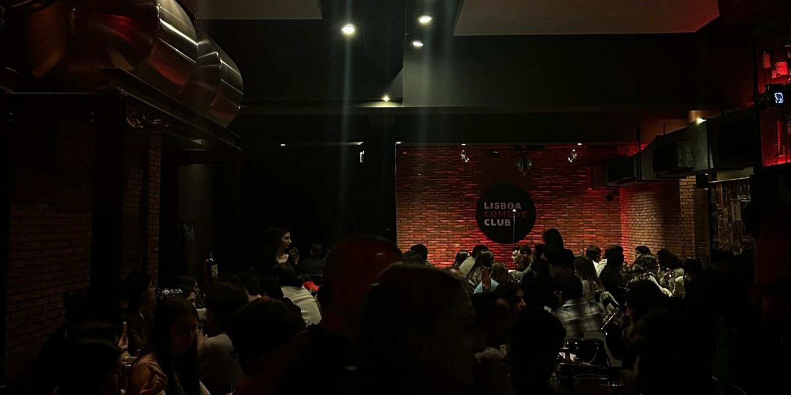
06
07
08
09
#5599ABthe sea, from in it
#D6C4A4a wall at four o'clock
#877E71a wall of sleeves
#726754a bakery ceiling
#2F3830the windscreen
#030205the street, after midnight
10
11
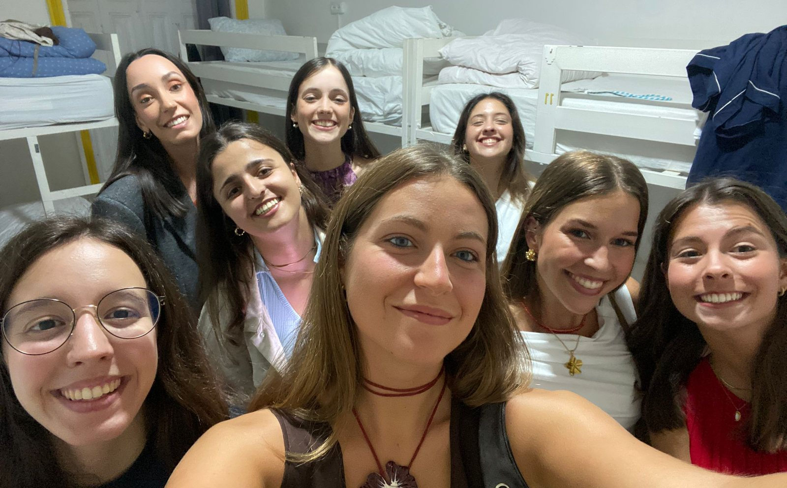
12
13
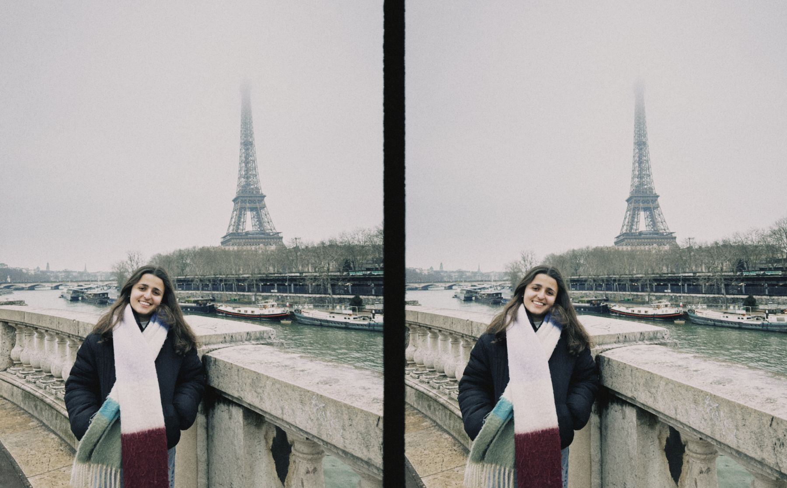
14
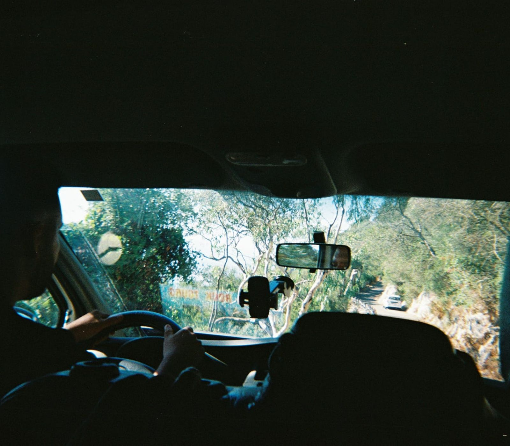
15
specifications
body
- modelCanon AE-1 Program, 1981
- type35 mm SLR, focal plane
- mountCanon FD, breech-lock
lenses
- normalFD 50 mm f/1.4
- wideFD 28 mm f/2.8
- longFD 135 mm f/2.5, rarely
exposure
- shutter2 s to 1/1000, and B
- meteringcentre-weighted, TTL
- modesprogram · shutter · manual
film
- speedsASA 12 to 3200
- stockPortra 400 · HP5 Plus
- sync1/60 s, hot shoe
viewfinder 93.5 % at 0.83× · 6 V battery, dead half the time · winder A when I remember it · set in Archivo and Instrument Serif · sofiacvicente.pt
16
17
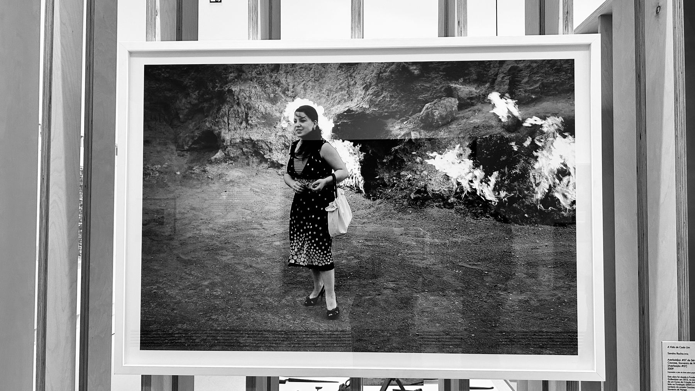
18
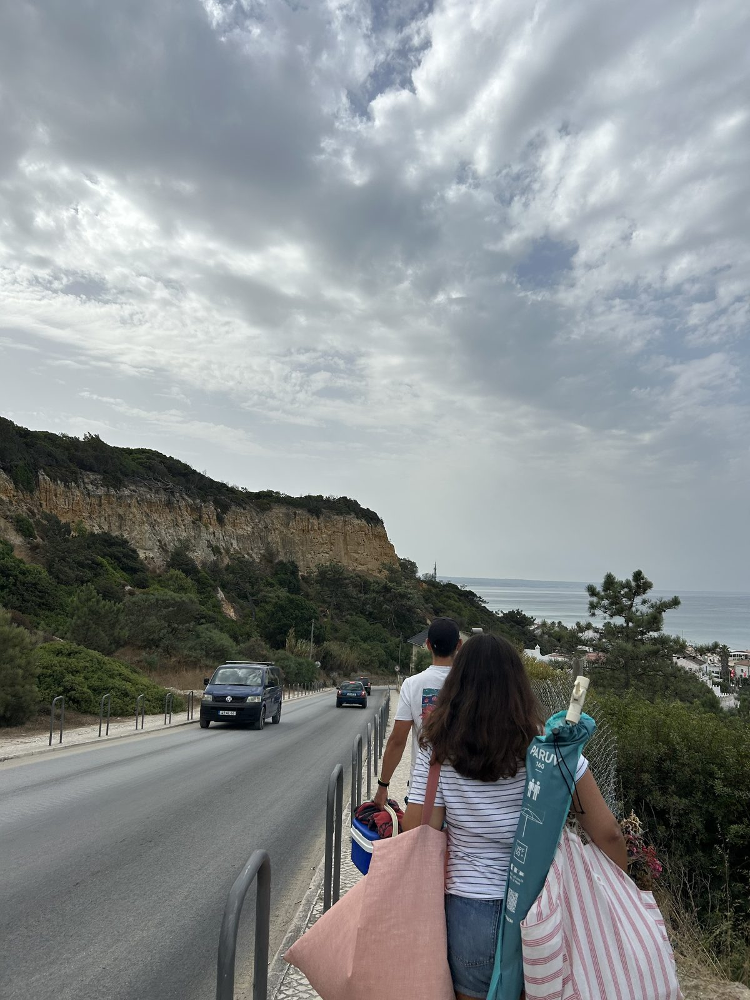
19
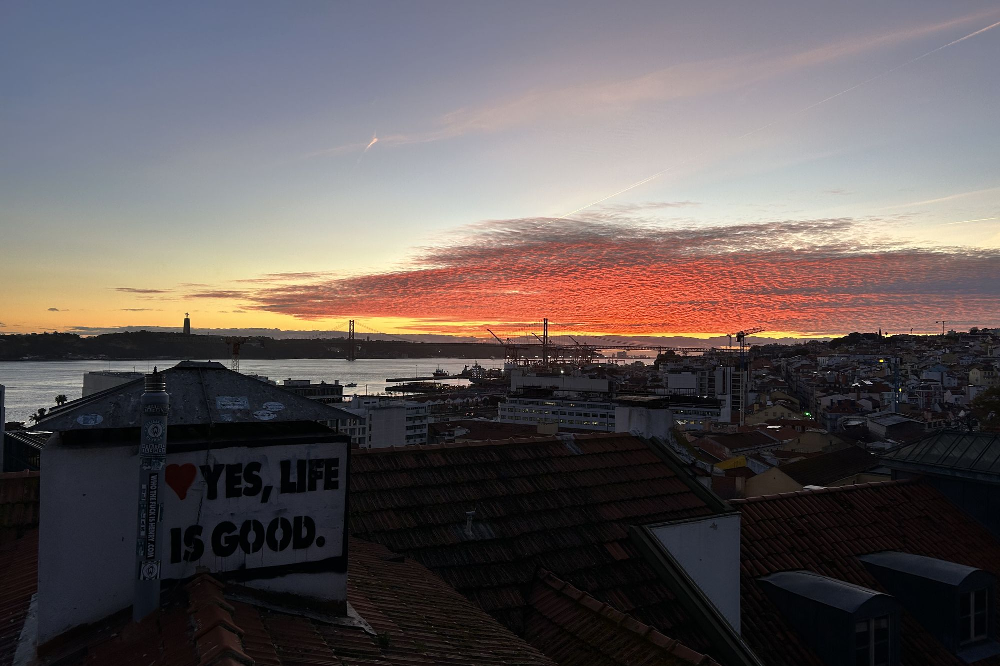
20
21
ON FILM
drag a corner, click a page or use the ← → keys